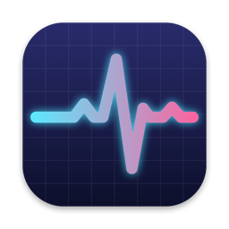

Dans ta barre des menus
Trois styles au choix : logo et pourcentage, mini anneaux, ou seulement l’IA la plus proche de sa limite.
Pulse affiche dans ta barre des menus le pourcentage utilisé de Claude, ChatGPT, Gemini et Copilot, et calcule l’heure à laquelle tu seras bloqué.
macOS 15 ou plus récent · Apple Silicon et Intel
Pulse mesure ta vitesse de consommation sur les 30 dernières minutes et la prolonge jusqu’au reset. Tu sais si tu peux finir ta tâche, ou s’il vaut mieux changer d’IA maintenant.
Trois styles au choix : logo et pourcentage, mini anneaux, ou seulement l’IA la plus proche de sa limite.
L’heure à laquelle chaque limite sera atteinte, recalculée à chaque actualisation.
Une notification avant de toucher le plafond, et une autre quand ta limite redevient disponible.
Petit, moyen ou grand, sur ton bureau ou dans le Centre de notifications.
Sans connexion, la dernière valeur reste affichée, et une limite passée son reset repart à zéro.
Écrit en Swift et en Rust, sans icône dans le Dock, presque aucune ressource au repos.
Ouvre le DMG et glisse Pulse dans Applications. L’icône apparaît dans ta barre des menus.
Pulse retrouve tes outils déjà connectés : Claude Code, Codex, Gemini CLI et GitHub CLI. Pour Claude, tu peux aussi te connecter avec ton compte claude.ai.
Un coup d’œil suffit. Et si une limite approche, Pulse te prévient avant.
Pulse lit les connexions de tes outils sans les copier ni les modifier. Ce qu’il garde lui-même reste dans le Trousseau macOS. Il ne parle qu’aux services concernés, et à personne d’autre.
Non. Pulse lit les mêmes informations d’utilisation que les outils officiels, mais n’est affilié à aucun de ces services.
Non. Ils restent sur ton Mac, et Pulse ne contacte que le service concerné pour lire ton utilisation.
Le service a probablement changé le format de ses réponses. La dernière valeur connue reste affichée en attendant une mise à jour de Pulse.
Sur macOS 15 Sequoia ou plus récent, avec une puce Apple ou un processeur Intel.

Version récente · macOS 15 ou plus récent